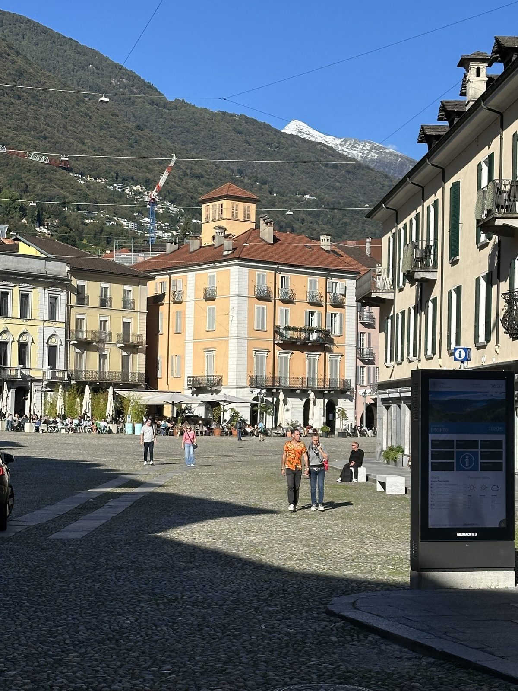
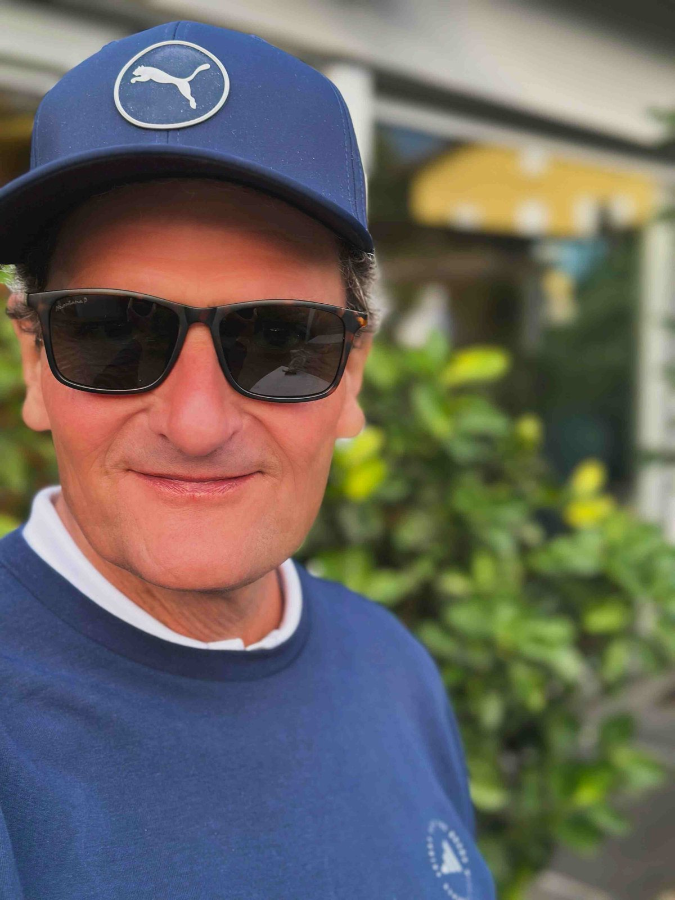
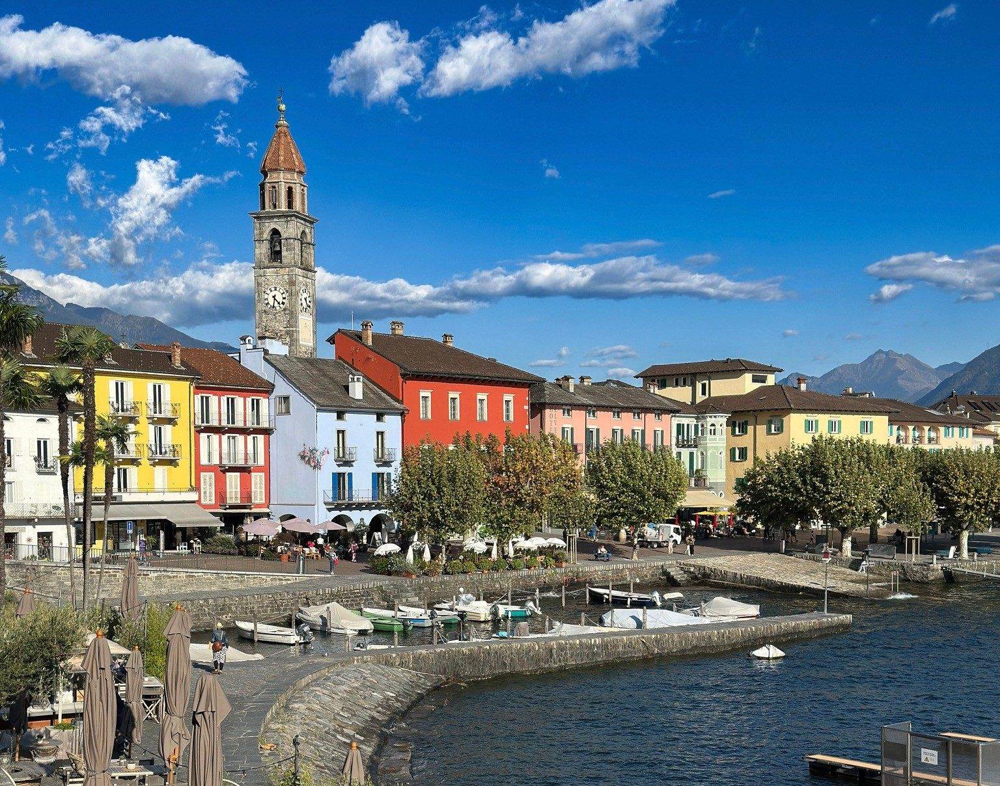
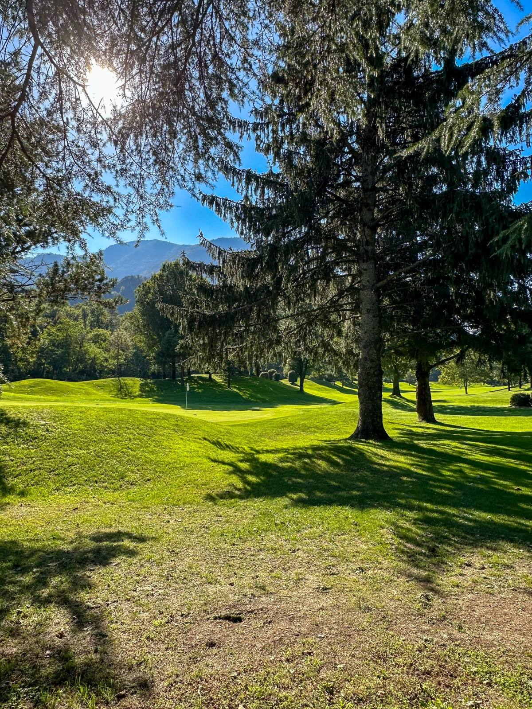

Locarno und Ascona teilen sich denselben See und dieselbe Sonne. Dazu ein Tempo, das man sich erst erarbeiten muss, wenn man aus Franken kommt. Ich hatte acht Tage und keine Agenda. Am Ende haben mich ein Platz und ein Hügel überzeugt.
Piazza Grande: Eines der bekanntesten Freiluftkinos der Welt
Tagsüber ist die Piazza Grande ein langgezogener Platz mit Natursteinboden, unter den Arkaden stehen Café-Tische. Abends im August wird daraus etwas anderes. Das Locarno Film Festival gibt es seit 1946. Seit 1971 laufen die Filme hier unter freiem Himmel. Die Leinwand misst heute 26 mal 14 Meter. Davor bis zu 8.000 Stühle, gerahmt von den beleuchteten Fassaden der Altstadt. Und das in einer Stadt mit 16.000 Einwohnern.
Ich war nicht zur Festivalzeit da. Man sieht die Verankerungen für die Bestuhlung im Pflaster. Für einen Moment kann man sich die Menschen vorstellen, die alle gleichzeitig nach oben schauen.


Monte Verità: Der Berg, auf dem die Bürgerlichkeit abgelegt wurde
Oberhalb von Ascona liegt ein Hügel. Monte Verità. Berg der Wahrheit. 1900 kauften der belgische Industriellensohn Henri Oedenkoven und die in Siebenbürgen aufgewachsene Musiklehrerin Ida Hofmann hier ein Grundstück auf dem Hügel Monescia. Daraus wurde eine vegetarische Aussteigerkolonie: barfuß, im Licht- und Luftbad, ohne Konventionen. Die Einheimischen nannten die Bewohner „Balabiott“. Die Nackttänzer.
Innerhalb weniger Jahre kam Hermann Hesse vorbei. Isadora Duncan auch. Halb Europas Bohème. Alle mit derselben Frage: ob man wirklich anders leben kann.
Ich bin die 45 Minuten von der Seepromenade hochgelaufen. Vorbei an Kastanienwäldern, die im September schon die ersten Früchte abwerfen. Oben stehen noch ein paar Holzhäuser und ein Museum, sonst ist es still. Vom Aufbruch ist nichts mehr zu sehen. Heute ein Kongresszentrum der Fondazione Monte Verità.
Diese Leute sind vor 125 Jahren hierher gekommen, um genau das zu tun, was ich mir für meinen Lebensabend manchmal erträumt hatte. Nur radikaler. Und ohne Rückflugticket.
Madonna del Sasso: Der Blick
Das Wallfahrtsheiligtum über Locarno erreicht man zu Fuß oder mit der Standseilbahn, die seit 1906 den Hang hochruckelt. Ich bin gelaufen. Aus Prinzip.
Oben der Blick: über Dächer, über den See, bis zu den Gipfeln im Dunst.
Verzascatal: Ein Tag zwischen Lavertezzo und Sonogno
Von Ascona aus habe ich einen Tagesausflug ins Verzascatal gemacht. Der Bus 1 fährt in rund einer Viertelstunde zum Bahnhof Locarno, dort wartet das Postauto 321. Das fährt das Tal hinauf, knapp 40 Minuten bis Lavertezzo, gut eine Stunde bis Sonogno. Erster Halt: Lavertezzo.
Dort überspannt die Ponte dei Salti die Verzasca, eine Steinbrücke mit zwei Bögen. Wie alt sie ist, steht nicht eindeutig fest: Der Tourismus von Ascona-Locarno nennt sie mittelalterlich, Wikipedia datiert sie ins 17. Jahrhundert. Deutschsprachige Urlauber nennen sie gern Römerbrücke, mit den Römern hat sie nichts zu tun. 1868 wurde sie teilweise zerstört, 1960 wieder aufgebaut. Darunter fließt das Wasser zwischen glatt geschliffenem Granit, so klar, dass man die Steine am Grund zählen könnte. Auf den Felsen sitzen Leute und schauen ins Grün.
Danach weiter bis zur Endhaltestelle. Sonogno ist das hinterste Dorf im Tal, alte Häuser, schmale Gassen. In der früheren Casa Genardini an der Piazzetta ist heute das Museo di Val Verzasca untergebracht.
Tipp: Das Wasser sieht harmlos aus, hat aber seine Tücken. Die Warnschilder vor Ort meinen es ernst.
Essen im Tessin: sitzen bleiben
Essen bedeutet hier: sitzen bleiben. Der Espresso dauert seine fünf Minuten. Der Aperitivo seine zwei Stunden. Niemand schaut auf die Uhr.


Golf in Losone: Handicap mit Bergpanorama
Ein paar Bälle habe ich auch geschlagen. Golfplatz von Losone nahe Ascona, 18 Löcher in einer Parklandschaft nahe am Bergmassiv, der Platz wurde 2001 eröffnet. Blick auf genau die Berge, die ich Stunden vorher von der Madonna del Sasso aus fotografiert hatte. Das Bergpanorama gleicht viel aus.


Locarno oder Ascona: Was ist schöner?
Locarno ist die Stadt: Bahnhof, Piazza Grande, Madonna del Sasso. Ascona ist das Dorf daneben: Seepromenade, Monte Verità, Golfplatz. Mit dem Bus 1 liegen beide eine Viertelstunde auseinander. Mein Favorit ist Ascona, herzliche Gemütlichkeit inmitten einer wunderschönen Landschaft.
📍 Ascona auf Google Maps 📍 Ponte dei Salti in Lavertezzo auf Google Maps 📍 Sonogno auf Google MapsQuellen & Recherche
Diese Story basiert nicht nur auf eigenen Erinnerungen. Ein paar Fakten habe ich recherchiert und mit folgenden Quellen abgeglichen. Wer will, kann selbst nachlesen.
- Ponte dei Salti, Ascona-Locarno Tourismus
- Verzascatal, Schweiz Tourismus
- Valle Verzasca, PostAuto
- Ponte dei Salti, 17. Jahrhundert, „Römerbrücke“, Wikipedia · Standort Titelbild 46.2600° N, 8.8358° O
- Dorfkern von Sonogno, Ticino Turismo
- Fahrplan Bus 1 Ascona–Locarno und Postauto 321 Locarno–Sonogno, search.ch (Fahrzeiten Stand November 2026)
- Piazza Grande, offizielle Seite Locarno Film Festival
- 70 Jahre Filmfestival Locarno, swissinfo.ch
- Piazza Grande als Freiluftkino, Ticino Turismo
- Locarno, Wikipedia
- Über die Stiftung, offizielle Seite Monte Verità
- Monte Verità, Historisches Lexikon der Schweiz
- Geschichte 1913–1918, Media Guide Monte Verità
- Standseilbahn Locarno–Madonna del Sasso, Wikipedia
- Locarno Film Festival, Piazza Grande seit 1971, Wikipedia
- Monte Verità, Ida Hofmann, Balabiott, Wikipedia
- Monte Verità und seine Gäste, Gemeinde Ascona
- Golf Gerre Losone, offizielle Seite
- Golf Gerre Losone, 18 Löcher, eröffnet 2001, Lago Maggiore Tourismus
- Gerre Losone, Top 100 Golf Courses